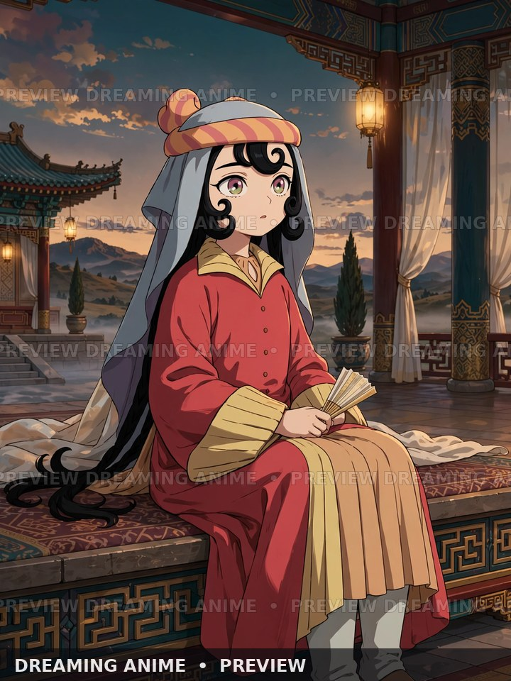

Layered court robes
Start with a comfortable cream or warm-tan inner layer, then add a flowing red outer robe with generous sleeves. Use lightweight fabric so the layers move naturally and remain comfortable through a convention day.
Build a convention-ready look inspired by Reirin’s court-butterfly styling in Though I Am an Inept Villainess. This guide follows the reference image used for the Dreaming Anime feature; check the exact official visual for the version you want to recreate, since the story includes a body swap.

Start with a comfortable cream or warm-tan inner layer, then add a flowing red outer robe with generous sleeves. Use lightweight fabric so the layers move naturally and remain comfortable through a convention day.
Use the reference’s golden-yellow collar and broad cuffs as strong color blocks. Add trim with appliqué or fabric paint, keeping it soft and securely stitched rather than using heavy pieces that pull on the robe.
Build the peach-orange striped headpiece over a secure wig cap, then attach the pale blue-gray veil so it sits neatly behind the head. Keep the veil clear of the eyes and fasten it with lightweight, blunt-ended clips.
Style long black hair with loose curls and face-framing strands as shown in the reference. Use a flexible wig and gentle styling products; prioritize a stable fit and clear vision over exact weight or length.
The outfit notes describe the supplied reference, not a claim that the generated wallpaper is official art. Reirin’s body-swap story can involve different visual versions of the character.
These are adaptable base pieces rather than licensed Reirin replicas. Check current colors, sizing, seller details, shipping, and returns before ordering; product availability and prices can change.

A red historical-style dress that can be adapted with layered sleeves and gold trim. Listing rating: 3.8/5 from 7 reviews.
AMAZON LINK · PREVIEW ONLY
A long black synthetic wig that can be styled into loose curls and face-framing strands. Listing rating: 3.9/5 from 771 reviews.
AMAZON LINK · PREVIEW ONLYThese listings are general starting points only; neither is presented as an official costume or exact character replica. Affiliate links may earn Dreaming Anime a commission.
Use lightweight fabric, soft batting, thread, blunt clips, and pins secured beneath the wig. Avoid hard or sharp fasteners near the face.
Pack safety pins, fashion tape, a small sewing kit, spare hair clips, water, and blister protection. Test the veil and sleeves while walking and sitting before the event.
Keep the veil out of your sightline, secure long hems to avoid tripping, and follow venue rules for accessories. No signature hand-held prop is required for this reference-led look.